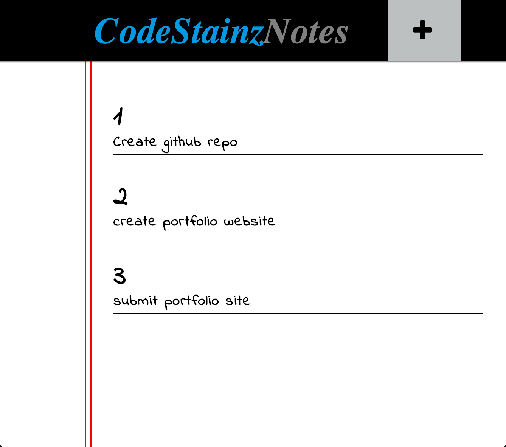

CodeStainz Notes
This project was a simple notes applicaton. It makes use of HTML, CSS, Javascript, LocalStorage, and JSON. This application uses a html form to collect notes from the user and display them on screen. The notes are then saved in local storage and they are retrievable even after the browser has been closed.
Checkout project here